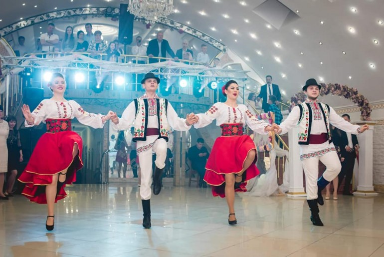

| 1. Dansuri pentru copii | Dezvoltarea timpurie a copilului are un efect pozitiv asupra formării personalităţii multiple. Coregrafia este una dintre artele, care dezvoltă o parte armonioasă, estetică şi fizică. | |
| 2. Dansuri sportive de gală | Este o varietate bogată de stiluri de dans modern, de stradă şi unite prin faptul că acestea sunt dansuri de cluburi. | |
| 3. Dănsători la evenimente | Nu există nici o îndoială, că un atribut important al oricărei seri de odihnă este un grup de dansatori. Dansatorii profesionişti vor aduce cu siguranţă diversitatea, frumuseţea şi originalitate evenimentului. |  |
| 4. Hip-Hop | Hip-hop-ul este o cultură de sine, care a apărut în ghetourile negre din New York, în anii şaizeci. | |
| 5. Zumbo-fitnes | Pentru persoanele care doresc sa slabeasca sau pur si simplu sa-si mentina forma si doresc sa fie mereu intr-o dispozitie perfecta fara a invata miscari concrete sau anumite stiluri de dans. | |
| 6. Dansuri moderne | Dansul modern îmbină tehnici de improvizaţii pe tema echilibrului şi utilizarea podelei nu doar ca punc de sprijin, ci şi ca element care oferă energie dansului. | |
| 7. Latino de club | Este o extravagantă vibrantă a simţurilor, limbajul corpului de o muzică de foc. Un număr de mişcări de bază completate de improvizaţie, umple cu energie şi bună dispoziţie. dansuri pentru adulti Chisinau | |
| 8. Salsa | Salsa este întotdeauna un amestec, se dezvoltă pe influenţa noilor tendinţe muzicale. Aceasta este parte a culturii latino-americane. |